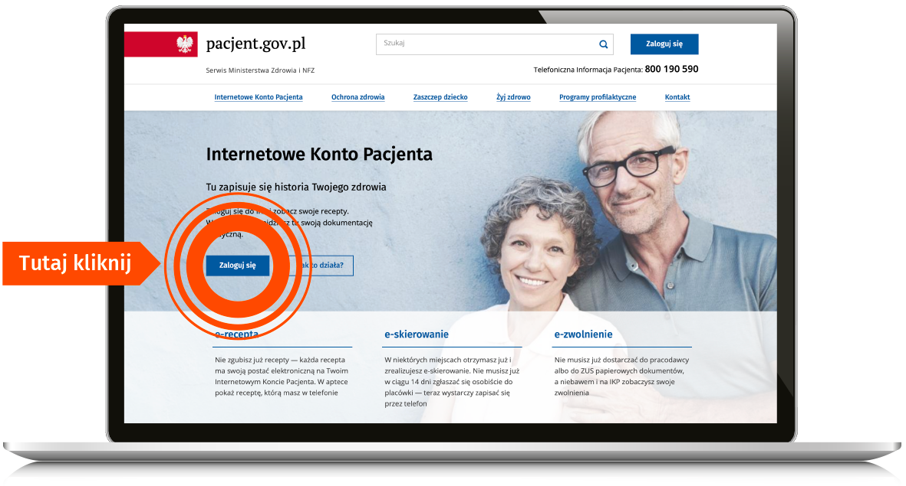

-
Poradnie specjalistycznePoradnie
Poradnia Podstawowej Opieki Zdrowotnej Poradnia Alergologiczna Poradnia Chirurgiczna Poradnia Chorób Naczyń Poradnia Dermatologiczna Poradnia Endokrynologiczna Poradnia Gastrologiczna Poradnia Geriatryczna Poradnia Ginekologiczna Poradnia Internistyczna Poradnia Kardiologiczna Poradnia Laryngologiczna Poradnia Medycyny Pracy Poradnia Nefrologiczna Poradnia Neurologiczna Poradnia Ortopedyczna Poradnia Pediatryczna Poradnia Proktologiczna Poradnia Reumatologiczna Poradnia Urologiczna Poradnia Zdrowia Psychicznego Gabinet Psychoterapii i Pomocy Psychologicznej Dzieci i Dorosłych Gabinet Zdrowego Żywienia Badania Laboratoryjne Opieka Pielęgniarska Pracownia USG
- Aktualności
- Placówki
- Informacje
- Kontakt

Internetowe Konto Pacjenta (IKP)
to rewolucyjne narzędzie w systemie ochrony zdrowia, ma ułatwić pacjentom wygodne korzystanie z usług cyfrowych i uporządkować rozproszone dotąd informacje medyczne o naszym stanie zdrowia w jednym miejscu. To bezpłatne konto ma każdy, kto ma PESEL. Wystarczy się tylko zalogować.

IKP umożliwia:
- e-receptach wystawionych, zrealizowanych, a także o tych, które zostały zrealizowane częściowo
- dawkowaniu leku, który przepisał Ci lekarz
- bezpłatnych lekach dla osób 65+ i do 18. roku życia
- historii Twoich wizyt w przychodni/u lekarza oraz innych zdarzeniach medycznych, również finansowanych prywatnie
- pomocy, jakiej Ci udzielono, a także, ile NFZ zapłacił za świadczenia
- wystawionych skierowaniach i e-skierowaniach
- wystawionych e-zleceniach na wyroby medyczne
- e-zwolnieniach i zaświadczeniach lekarskich wystawionych w związku z chorobą i macierzyństwem
- Twoich szczepieniach
- historii leczenia osoby bliskiej, która Cię do tego upoważniła— a także Twojego dziecka do 18.roku życia
- tym, kto i kiedy Cię zgłosił do ubezpieczenia zdrowotnego, o wysokości opłaconych składek czy dacie zarejestrowania ostatniej składki
- lekach (możesz sprawdzić każdy lek dopuszczony do obrotu w Polsce)
- Twoich wyrobach medycznych zrefundowanych przez NFZ
- elektronicznej dokumentacji medycznej (EDM) np. wyniki badań np. wyniki i opisy badań, diagnozy lekarzy, wypis ze szpitala, dokumenty z SOR, o ile lekarz lub placówka umieścili ją w systemie
- indywidualnym planie opieki medycznej (IPOM) wraz z harmonogramem leczenia.
Jak zacząć korzystać z IKP?
Internetowe Konto Pacjenta działa podobnie jak bankowość internetowa – jest bezpieczne i chronione przed niepowołanymi osobami, a uzyskanie do niego dostępu odbywa się za pomocą bezpiecznego mechanizmu dostępu, czyli profilu zaufanego.
Profil zaufany to indywidualny podpis elektroniczny, za pomocą którego można załatwić online wiele spraw urzędowych, np. złożyć wniosek o 500+, becikowe, złożyć PIT, a także założyć firmę, wyrobić dowód osobisty czy sprawdzić swoje punkty karne. Dzięki profilowi zaufania można też korzystać z Internetowego Konta Pacjenta (IKP).
Profil zaufany pacjent może założyć online, przez bankowość internetową.
Jak założyć profil zaufany dowiesz się TUTAJ
Jeśli masz ZAUFANY PROFIL:
- wejdź na www.pacjent.gov.pl
- wybierz zaloguj się kontem ZIP
- wpisz dane, którymi logowałeś się do ZIP i gotowe
Jeśli nie masz ZAUFANEGO PROFILU:
- załóż PROFIL ZAUFANY
- zaloguj się do IKP za pomocą PROFILU ZAUFANEGO
- jeśli masz e-dowód, możesz zalogować się do IKP za pomocą e-dowodu